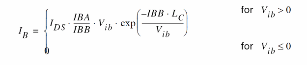

Model Equations
Static Intrinsic Model
Basic Relations
Thermal voltage
Energy Gap
Intrinsic Parameters Initialization
The basic intrinsic model parameters COX, GAMMA, PHI, VTO, KP, and UCRIT are related to the fundamental process parameters TOX, NSUB, VFB, UO, VMAX, respectively, similarly as in early SPICE models.
If UCRIT is not specified, it is initialized as
If E
Intrinsic Parameters Temperature Dependence
Effective Channel Length and Width
Short Distance Matching
Random mismatch between two transistors with identical layout and close to each other is in most cases suitably described by a law following the inverse of the square root of the transistors’ area. The following relationships have been adopted:
Reverse Short-Channel Effect (RSCE)
Effective Gate Voltage Including RSCE
Effective Substrate Factor Including Charge-Sharing for Short and Narrow Channels
Pinchoff Voltage for Narrow-Channel Effect
Effective Substrate Factor Accounting for Charge Sharing
Pinchoff Voltage Including Short- and Narrow-Channel Effects
Slope Factor
Large-Signal Interpolation Function
F(v) is the large-scale interpolation function relating the normalized currents to the normalized voltages. A simple and accurate expression for the transconductance interpolation allows a consistent formulation of the static large-signal interpolation function, the dynamic model for the intrinsic charges (and capacitances), and the intrinsic time constant and the thermal noise model.
Large-signal interpolation function:
Unfortunately, the preceding equation cannot be inverted analytically. However, it can be inverted using a Newton-Raphson iterative scheme. Currently, a simplification of this algorithm that avoids iteration is used, leading to a continuous expression for the large-signal interpolation function.
Large-Signal Interpolation Function for Hand Calculation
For hand calculations, an analytically simple interpolation function, presenting the same asymptotic behavior with slightly reduced accuracy in moderate inversion, can be used:
Forward Normalized Current

Velocity Saturation Voltage
Drain-to-Source Saturation Voltage for Reverse Normalized Current
Channel-Length Modulation
Equivalent Channel Length Including Channel-Length Modulation and Velocity Saturation
Reverse Normalized Current
Reverse Normalized Current
Reverse Normalized Current for Mobility Model, Intrinsic Charges/Capacitances, and NQS Time Constant
Transconductance Factor and Mobility Reduction Due to Vertical Field
For the definition of the normalized bulk and inversion charges qB and qI, refer to Normalized Intrinsic Node Charges.
Mobility Reduction Model Used in Former EKV Model Versions
For reasons of compatibility with EKV model versions before 2.6, a simpler mobility reduction model that uses the parameter THETA can be used. The choice among model versions is made using the model version selector UPDATE. Check with the documentation in your simulator. If a model version UPDATE<2.6 is specified, the former mobility reduction model is chosen:
Specific Current
Drain-to-Source Current
Impact Ionization Current

Quasi-static Model
Both a charge-based model for transcapacitances, allowing charge conservation during transient analysis, and a simpler capacitances-based model are available.
Dynamic Model for the Intrinsic Node Charges
Normalized Intrinsic Node Charges

qOX is a fixed-oxide charge assumed to be zero. The preceding equation expresses the charge conservation among the four nodes of the transistor.
Total Node Charges
Intrinsic Capacitances
Transcapacitances
The intrinsic capacitances are obtained through derivation of the node charges with respect to the terminal voltages. This results in simple analytical functions for all the trancapacitances in terms of xf, xr, the pinchoff voltage, the slope factor, and derivatives thereof.
Normalized Intrinsic Capacitances
A simpler model using the five intrinsic capacitances corresponding to the equivalent circuit shown in Equivalent Circuit can be obtained when neglecting the slight dependence on the slope factor n, resulting in the following simple functions:
Total Intrinsic Capacitances

Nonquasi-static (NQS) Model
The EKV model includes a first-order NQS model for small-signal (.AC) simulations. The expression of the NQS drain current is obtained from the quasi-static value of the drain current, which is then first-order low-pass filtered. NQS is a flag (model parameter) allowing you to disable the NQS model, and τ is the bias-dependent characteristic time constant.
Intrinsic Time Constant
τ0 is the intrinsic time constant defined as

The corresponding small-signal (.AC) transadmittances are then given by
where gm, gms, and
Intrinsic Noise Model
The noise is modeled by a current source INDS betwe en intrinsic source and drain. It is composed of a thermal noise component and a flicker noise component and has the following power spectral density (PSD):
Thermal Noise
Flicker Noise
When model parameter noisemod=1,
When model parameter noisemod=2,
When model parameter noisemod=3,
Related Topics
Return to top